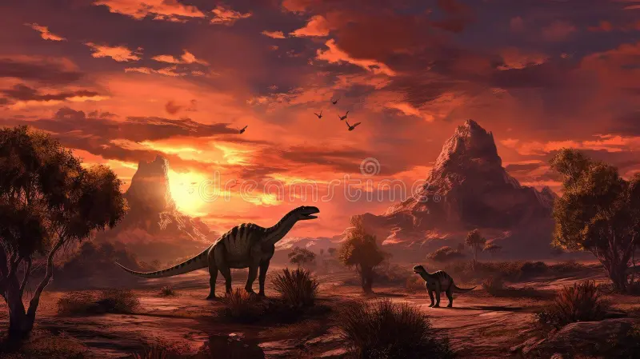

Introducción
Los dinosaurios dominaron la Tierra durante millones de años, siendo los reptiles más grandes y poderosos que jamás han existido. Los dinosaurios fueron un grupo de reptiles que habitaron la Tierra en la era mesozoica , desde el período triásico superior hasta fines del cretácico (245 a 65 millones de años atrás). Su desaparición marca el límite entre la era mesozoica y la cenozoica, y el comienzo de la denominada edad de los mamíferos. El término dinosaurio proviene del griego (significa "lagarto terrible") y se refiere a ejemplares de lo más diversos: grandes, como el brontosaurio, que pesaba cerca de 75 toneladas, y muy pequeños, como el saltopus, de tan sólo 50 cm de largo. Los primeros homínidos , por su parte, aparecieron en la Tierra hace relativamente poco, alrededor de 2 millones de años atrás, muchísimo después de que el último de estos grandes reptiles pereciera. Las imágenes de los primeros hombres junto a los dinosaurios no son más que un producto de la fantasía
